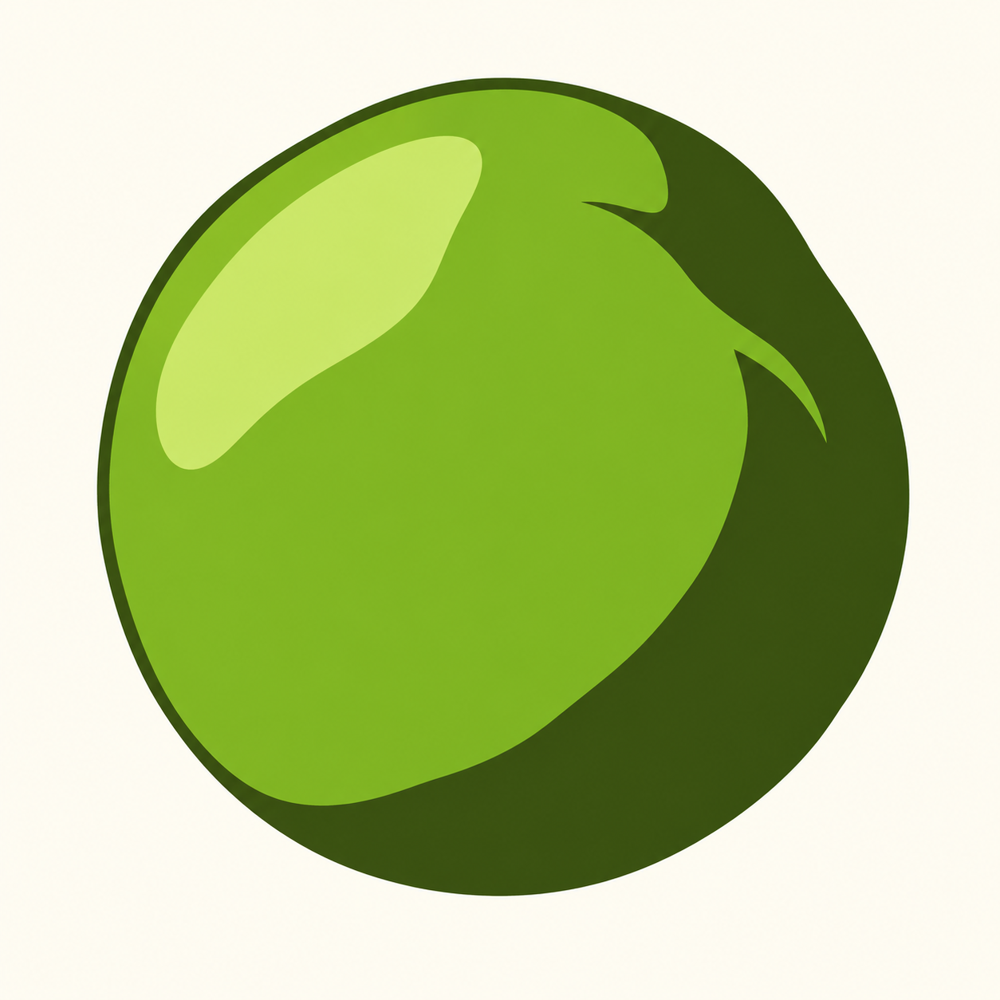

Produktionsansicht mit Motivspoiler. Technische Zertifizierung, Motivqualität und redaktionelle Freigabe sind getrennt. Motiv-/Spielabnahme: offen.
Quelle: pz-7ec3-pea-ma-r01 · Datei: MA-r01.png
Original SHA-256: c9ec8c9f026b0642abaa61f71e499e8b0493e3efb00d17f0889f96821eb55751
Normalisiert SHA-256: 8d9be9425010227ec2a0a43793838132fca8c46010258f9fc2cc81391020d467

{'alpha_below': 128, 'background': '#fffdf3', 'briefing': 'Faithful single green pea. Preserve identity, perspective, asymmetric rounded proportions, upper-left highlight, connected lower-right shade and important negative spaces. No stem or nub. 24x24 color, three foreground greens plus empty. Only exterior blank background cropped to a square; original MA-r01 and reveal A-r02 preserved byte-for-byte. Crop/three-color corridor expressly approved by Tobias during production on 2026-10-12.', 'crop': [113, 93, 1148, 1128], 'fit': 'exact', 'format': 'picross-image-design-v1', 'height': 24, 'mode': 'color', 'origin': 'OpenAI native image editing in ChatGPT for Tobias; approved MA-r01 derived from approved A-r02. Original provenance and actual human statements retained in package.', 'palette': [{'id': 'body', 'rgb': '#85b21a'}, {'id': 'dark', 'rgb': '#3e540d'}, {'id': 'light', 'rgb': '#cee76e'}], 'rights': 'User-authorized own generated illustration and abstraction; no external reference.', 'source_id': 'pz-7ec3-pea-ma-r01', 'variants': [{'id': 'area', 'method': 'area', 'threshold': 128}], 'width': 24, 'working_mode': 'faithful'}
{'format': 'PNG', 'source_size': [1254, 1254], 'source_mode': 'RGB', 'orientation': 1, 'normalized_size': [1254, 1254], 'color_treatment': 'untagged/sRGB RGB or gray interpreted as sRGB', 'icc_sha256': None, 'alpha': 'preserved, composited against design background only during rasterization'}
{'tool': 'rp3-image-1', 'pillow': '12.3.0', 'jpeg': '8.0', 'jpeg_turbo': '3.1.4.1', 'littlecms': '2.19', 'zlib': '1.3.1.zlib-ng'}
{'status': 'solved', 'proof_verified': True, 'certified': True, 'logic_hash': '286699a610b2d4906f953d38d2dc52a9f92ed09d8ffdec0f3b41ce001a284efc', 'profile': {'id': 'full-line-color', 'version': 1, 'start': 'unknown', 'deduction': 'all-line-supported-values', 'search': False}, 'profile_hash': 'f63ee6c88e6baa9f6a22f386ae532482d7ffb7b9a2237867f0d7cd9960ab608f', 'steps': 82, 'line_evaluations': 130, 'elapsed_seconds': 0.07226909999735653}
Kandidat: f777fa2120ced4fcabdfdebca920d44bfa0b67052383d95e6f5f15b780bc2d5d
{'id': 'area', 'method': 'area', 'threshold': 128}
| Linie | Vollständige Hinweise (Länge:Farb-ID) |
|---|---|
| 1 | 1:light 4:body 2:light |
| 2 | 1:light 9:body 1:dark 1:light |
| 3 | 3:body 3:light 6:body 2:dark |
| 4 | 2:body 5:light 6:body 3:dark |
| 5 | 2:body 6:light 5:body 4:dark 1:body |
| 6 | 2:body 6:light 7:body 4:dark |
| 7 | 1:light 1:body 7:light 8:body 4:dark |
| 8 | 2:body 6:light 10:body 3:dark 1:light |
| 9 | 1:light 1:body 5:light 12:body 4:dark |
| 10 | 1:light 1:body 4:light 13:body 4:dark 1:light |
| 11 | 2:body 2:light 15:body 4:dark 1:body |
| 12 | 19:body 5:dark |
| 13 | 19:body 5:dark |
| 14 | 18:body 5:dark 1:body |
| 15 | 1:light 17:body 5:dark 1:body |
| 16 | 1:light 16:body 6:dark 1:light |
| 17 | 15:body 7:dark |
| 18 | 1:light 13:body 7:dark 1:light |
| 19 | 12:body 8:dark |
| 20 | 9:body 9:dark |
| 21 | 1:light 6:body 10:dark |
| 22 | 1:light 14:dark |
| 23 | 1:body 10:dark 1:light |
| 24 | 1:light 1:body 4:dark 1:body 1:light |
| Linie | Vollständige Hinweise (Länge:Farb-ID) |
|---|---|
| 1 | 2:light 4:body 2:light |
| 2 | 1:light 10:body 1:light |
| 3 | 3:body 3:light 8:body |
| 4 | 2:body 5:light 9:body 1:light |
| 5 | 2:body 5:light 11:body 1:light |
| 6 | 2:body 6:light 11:body 1:dark |
| 7 | 1:light 1:body 6:light 12:body 1:dark 1:body |
| 8 | 2:body 5:light 13:body 2:dark |
| 9 | 1:body 6:light 13:body 2:dark 1:light |
| 10 | 1:light 1:body 5:light 14:body 2:dark 1:body |
| 11 | 2:body 3:light 15:body 4:dark |
| 12 | 20:body 4:dark |
| 13 | 19:body 5:dark |
| 14 | 19:body 5:dark |
| 15 | 1:light 17:body 5:dark 1:body |
| 16 | 1:light 16:body 6:dark 1:light |
| 17 | 1:dark 2:body 1:dark 11:body 7:dark |
| 18 | 1:light 4:dark 9:body 7:dark 1:light |
| 19 | 5:dark 6:body 9:dark |
| 20 | 18:dark |
| 21 | 1:body 15:dark |
| 22 | 13:dark |
| 23 | 1:light 9:dark 1:light |
| 24 | 1:light 1:body 2:dark 2:body 1:light |